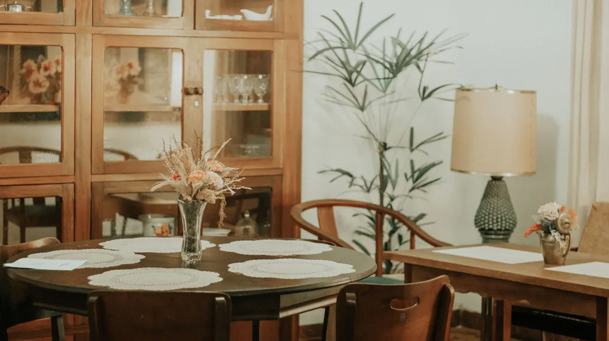
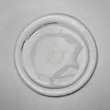

거실 분위기 바꾸는 소반 커피테이블, 실패 없는 연출 팁
사진: 女子 正真 / Pexels (무료 이미지, 출처 표기)
거실 인테리어에 변화를 주고 싶지만 대형 가구를 바꾸기는 부담스러우신가요? 최근 인테리어 트렌드 중 하나는 현대적인 거실에 한국 전통 소반(작은 다목적 식탁)을 커피테이블로 믹스앤매치하는 것입니다. 동양적인 단아함과 현대적인 모던함이 어우러져 독특한 아늑함을 선사하기 때문입니다.
하지만 무턱대고 소반을 들였다가 기존 소파나 카펫과 어울리지 않아 애물단지가 되는 경우도 적지 않습니다. 공간의 크기와 조화를 고려해 내 집에 딱 맞는 소반을 고르고 배치하는 실용적인 팁을 정리해 드립니다.
1. 우리 집 거실에 어울리는 전통 소반 종류별 특징

소반은 산지와 다리 모양에 따라 분위기가 크게 달라집니다. 어떤 가구와도 자연스럽게 어우러지는 대표적인 소반 3가지를 비교해 드릴 테니, 우리 집 인테리어 콘셉트와 대조해 선택해 보세요.
2. 소반을 커피테이블로 배치하는 3단계 레이어링 법칙
단품으로 두었을 때보다 여러 요소를 겹쳐 연출할 때 소반의 매력이 극대화됩니다. 공간이 넓어 보이고 세련된 느낌을 주는 배치 단계를 소개합니다.
- 1단계: 러그나 카펫으로 구역 나누기 - 맨바닥에 소반을 바로 두면 자칫 덩그러니 놓인 느낌을 줄 수 있습니다. 질감이 살아있는 미색이나 베이지 톤의 러그를 깔고 그 위에 소반을 배치하면 공간에 안정감이 생깁니다.
- 2단계: 높낮이가 다른 소반 매칭하기 - 넓은 거실이라면 크기와 높이가 미세하게 다른 소반 2개를 겹쳐서 배치해 보세요. 이를 레이어드(Layered, 겹쳐서 연출하는) 스타일이라고 하며, 단조로운 거실에 입체감을 불어넣어 줍니다.
- 3단계: 현대적 소품으로 믹스앤매치 - 소반 위에 전통 다기 세트만 올려두면 자칫 고풍스러움만 강조될 수 있습니다. 모던한 유리 컵이나 영문 서적, 세련된 화병을 함께 올려 현대적인 감각을 더해주는 것이 좋습니다.
3. 구매 전 반드시 확인해야 할 실전 체크리스트
소반을 커피테이블로 사용할 때 가장 흔히 하는 실수는 '높이 계산 실패'입니다. 일반적인 소파의 좌면 높이는 40~45cm 내외입니다. 따라서 소반의 높이도 이와 비슷하거나 약간 낮은 30~40cm 사이를 선택해야 소파에 앉아서 음료를 집기 편리합니다.
또한, 상판의 지름도 꼼꼼히 확인해야 합니다. 커피 두 잔과 간단한 디저트 접시를 올리려면 지름이 최소 40cm 이상인 제품을 추천합니다. 1인 가구나 서브 테이블로 활용할 계획이라면 30cm 내외의 아담한 크기가 적당합니다.
4. 원목 소반 오랫동안 깨끗하게 유지하는 관리법
천연 원목으로 제작된 전통 소반은 온도와 습도 변화에 민감합니다. 특히 뜨거운 커피잔을 받침대 없이 상판에 바로 올리면 흰 얼룩이 생기거나 칠이 벗겨질 수 있으므로 코스터(컵받침)를 필수로 사용해야 합니다.
일상적인 청소 시에는 물기가 거의 없는 마른 천으로 부드럽게 닦아내는 것이 좋습니다. 오염 물질이 묻었을 때는 중성세제를 묻힌 천으로 가볍게 닦아낸 후 즉시 마른걸레로 물기를 완벽히 제거해야 나무가 뒤틀리는 현상을 막을 수 있습니다.
🔗 이 글도 함께 보면 좋아요: 한방 족욕·입욕 센터 고르는 법, 실패 없는 4가지 체크리스트
관련 추천 상품
이 포스팅은 쿠팡 파트너스 활동의 일환으로, 이에 따른 일정액의 수수료를 제공받습니다.
한눈에 보는 상품 목록

호족반
다리 곡선이 날렵하고 세련되어 화이트 미니멀 인테리어에 잘 어울리는 전통 소반입니다.
해주반
상판 옆면에 화려한 조각 장식이 들어가 내추럴 우드 톤의 거실에 포인트 가구로 적합합니다.
통영반
곧고 단정한 다리 라인으로 모던 센추리나 묵직한 가죽 소파와 훌륭한 조화를 이룹니다.